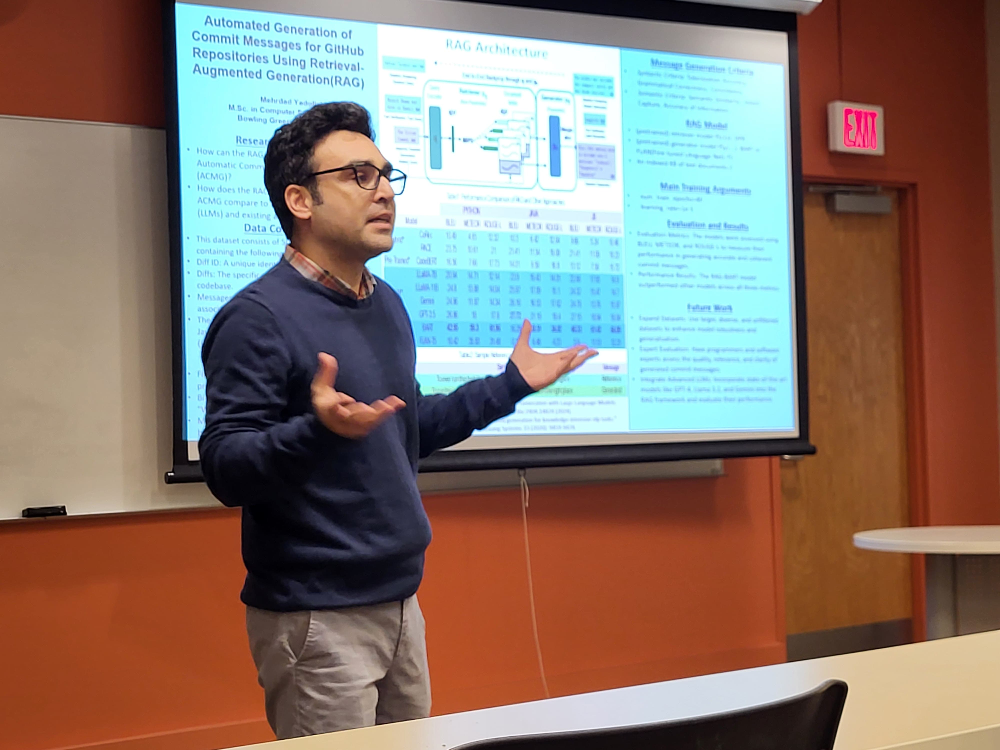

Mehrdad Yadollahi
Radio Access Network (RAN) Engineer | 5G, LTE | ML, AI | Network Engineer | Dual M.Sc. in Computer Science & Electrical Engineering (Telecommunications)
About
With over 15 years in the industry, I’m passionate about using technology to spark innovation and boost efficiency. I hold dual master’s degrees in Computer Science from Bowling Green State University and Electrical Engineering with a focus on Telecommunications. Throughout my career, I've enjoyed tackling complex challenges and driving innovation through cutting-edge research and the latest technologies.
What I Do:
- Cellular Network Technologies: 5G NR, O-RAN, LTE, UMTS, and GSM networks.
- Machine Learning and AI: Deep Learning, Generative AI, Large Language Models (LLMs), Retrieval-Augmented Generation (RAG), and Multi-Modal Transformers.
- Data Analysis & Visualization: SQL, NoSQL databases, JavaScript (D3.js), and HTML/CSS.
- Software Engineering, Cloud Computing, and Computer Networking: Network Functions Virtualization (NFV), Software-Defined Networking (SDN) and IP Backbone networking.
I’m passionate about connecting with forward-thinking organizations and like-minded professionals to transform bold ideas into meaningful innovations. I believe in the power of collaboration and continuous learning to drive technology forward. Whether it’s building cutting-edge solutions or reimagining user experiences, I’m eager to team up and make a lasting impact.
Let’s innovate together and shape the future of technology!
Experience
Bowling Green State University, Ohio Jul. 2024 - Dec. 2024
Graduate Teaching Assistant in the School of Engineering and Department of Computer Science
- Mentored students in electrical and computer engineering fundamentals through hands-on labs.
- Researched advancements in LLMs, Deep Learning Transformers, and Generative AI applications.
MCI (Major cellular network operator supporting 105 million subscribers) Nov. 2007 - Aug. 2023
Senior Network Engineer Apr. 2010 - Aug. 2023
- Directed end-to-end operations for nationwide networks spanning 2G to 5G technologies, ensuring high standards in quality assurance and providing robust support to Optimization, Performance, Planning, and NOC teams, along with expert troubleshooting and fault management nationwide.
- Managed vendor relationships and oversaw the hardware/software lifecycle, including compatibility, licensing, and End-of-Support management across 5G, LTE, UMTS, and GSM networks, maintaining adherence to SLAs.
- Executed comprehensive hardware and software upgrades across Nokia and Ericsson nodes, enhancing network reliability and achieving $3M in cost savings.
- Led commissioning, integration, and rehoming of Nokia and Ericsson gNB, eNB, and RNC nodes across packet cores, configuring Cisco, Juniper, and Ethernet switches, achieving $0.7M in savings and ensuring seamless IP backbone connectivity.
- Optimized network performance using machine learning and database management, enhancing customer satisfaction.
Radio Access Network (RAN) Engineer Nov. 2007 - Apr. 2010
- Boosted network performance and capacity by executing comprehensive parameter audits and optimizing RF parameters across multiple technologies, aligning configurations with industry standards to maximize overall efficiency.
- Enhanced network quality and minimized downtime by resolving radio access issues, optimizing neighbor definitions, and planning frequency refarming.
- Achieved $0.5M in cost savings through effective troubleshooting and upgrades of Nokia BSC2i, BSC3i, Flexi BSC, and BTS nodes, including implementing advanced Ethernet switch configurations.
Education
- M.Sc. in Computer Science, Bowling Green State University, Ohio, US
- Emerging Technologies in Telco Networks (ETTN-260 hours), University of Tehran
- M.Sc. in Electrical Engineering (Telecommunications), Azad University
- B.Sc. in Electrical Engineering, Azad University
Research
Publications
- Yadollahi, M. “Reducing processing delay and ping pong impact of multi attribute decision making handover for heterogeneous wireless networks” 2015 12th International Conference on Telecommunication in Modern Satellite, Cable and Broadcasting Services (TELSIKS), Nis, Serbia, 2015, pp. 365-368, doi:10.1109/TELSKS.2015.7357809. Citations: 8
- Yadollahi, M. “Addressing Small and Imbalanced Medical Image Datasets Using Generative Models: A Comparative Study of DDPM and PGGANs with Random and Greedy K Sampling.” arXiv preprint arXiv:2412.12532 (2024).
- Yadollahi, M. (2025). “Leveraged advanced Code-LMs (LLMs), particularly RAG, to automate commit messaging in GitHub, enhancing version control documentation accuracy and efficiency” [Under Review].
For more publications and citation details, please visit my Google Scholar page .
Contact
If you’d like to get in touch, feel free to reach me through any of the channels below.
- Email: mehrdad.yd23@gmail.com
- Email: mehrday@bgsu.edu
- Phone: +1 (713) 474-7642
- Address: Texas, US
- LinkedIn: My Linkedin
- GitHub: My GitHub
- GitLab: My GitLab